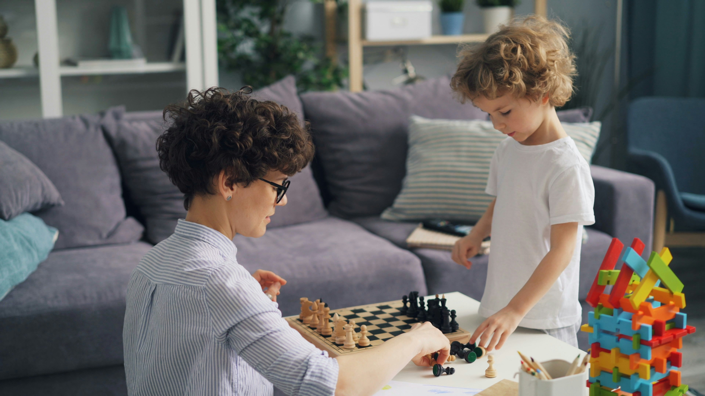
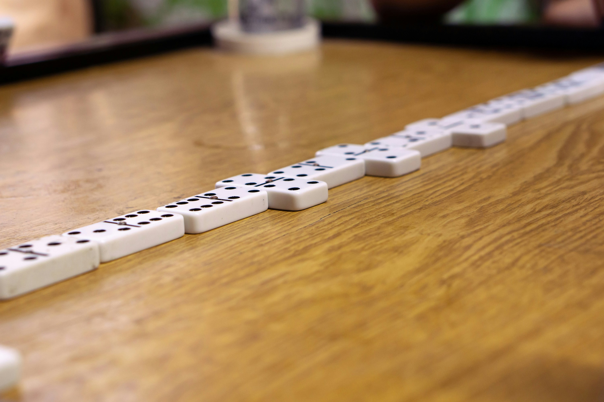
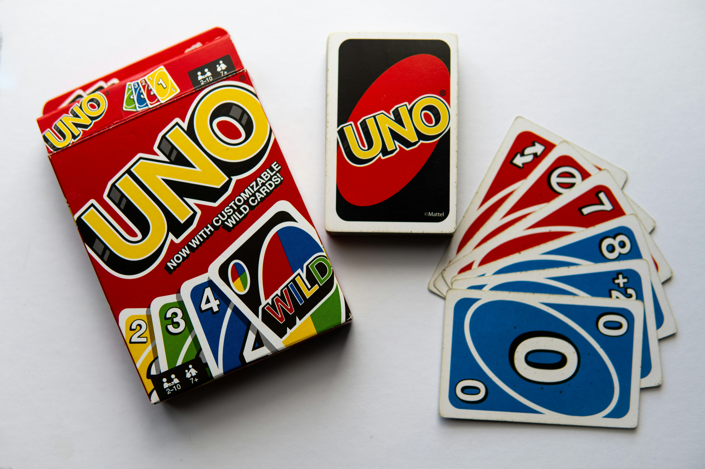
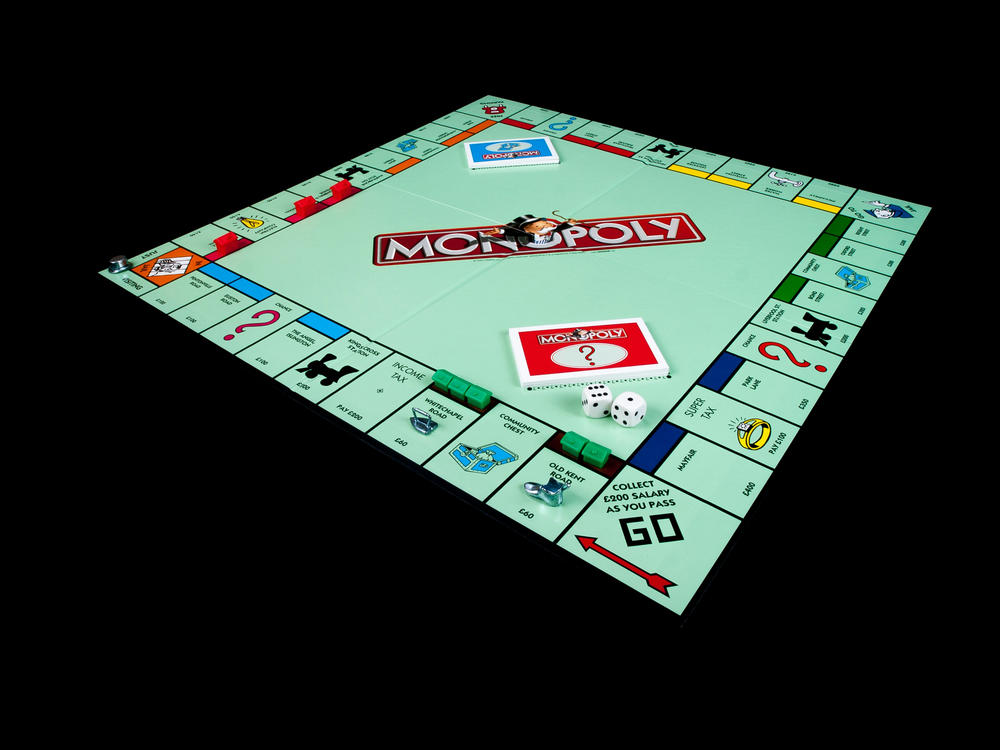
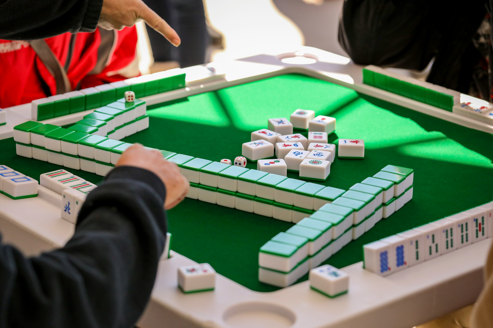
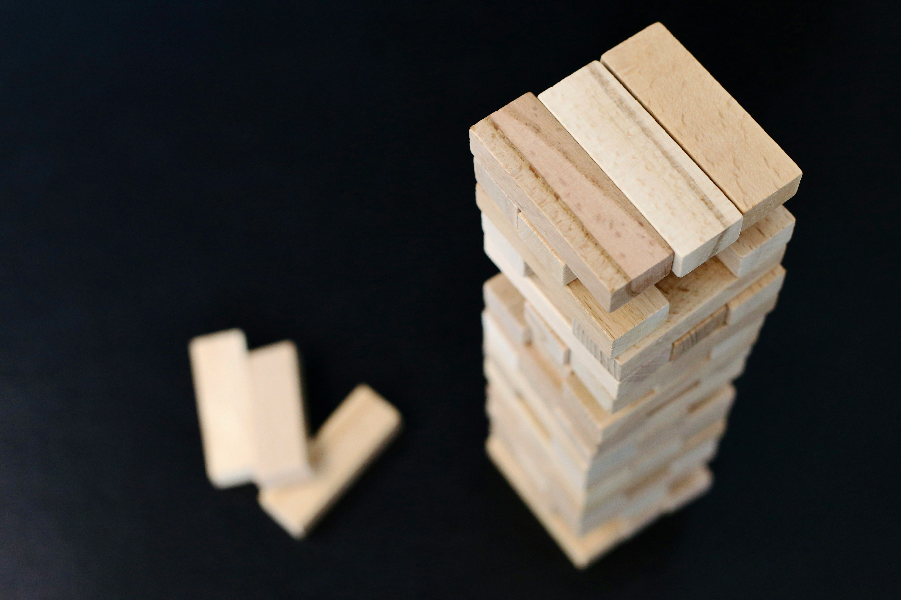
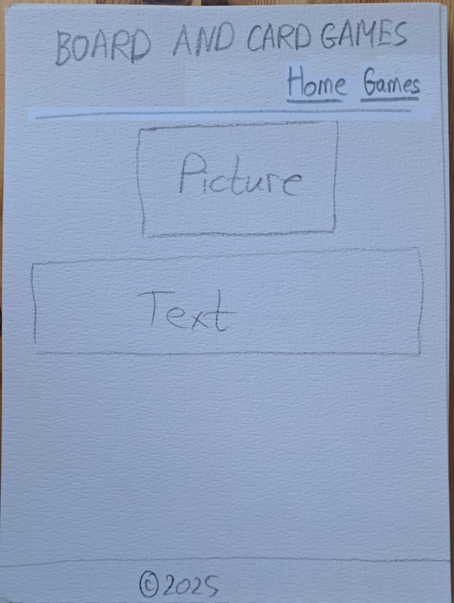
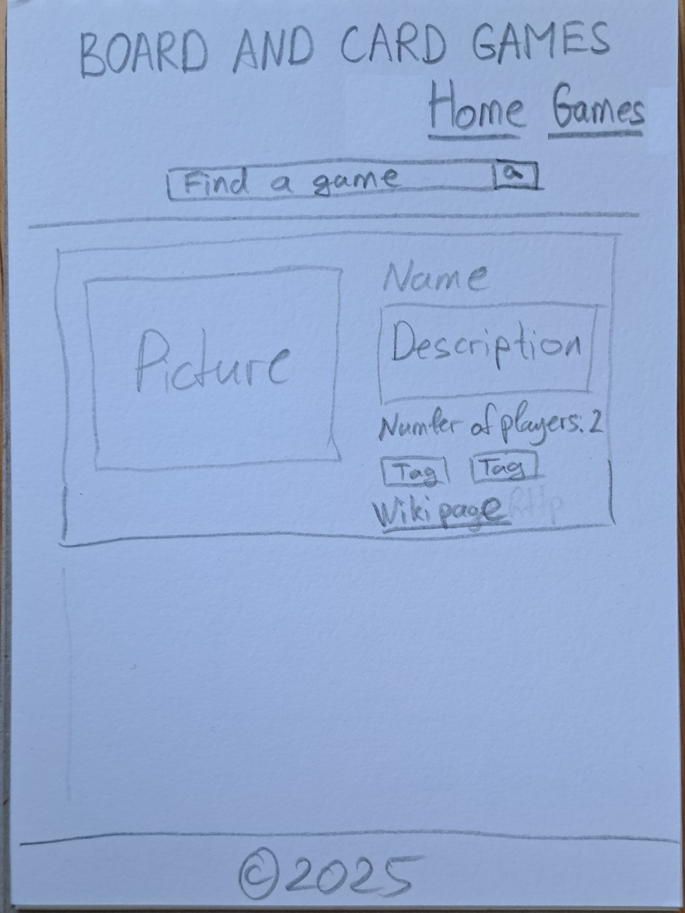

Overview
Purpose
The purpose of the website is to promote board and card games.
Audience
The audience consists of all people who like to play board and card games and want to learn about different board and card games
Dynamic elements
JavaScript will provide the information about different board and card games. That information will be stored in an array of objects. It will be output by JavaScript with the help of an array method and DOM interaction
Branding
Website Logo
Board and Card GamesStyle Guide
Color Palette
Palette URL: https://coolors.co/3a5694-f8ff24-e03b08-381d2a-01ec1c| Primary | Secondary | Accent 1 | Accent 2 | Accent 3 |
|---|---|---|---|---|
| [#3A5694] | [#FFFFFF] | [#F8FF24] | [#381D2A] | [#01EC1C] |
Typography
Heading Font: 'Times New Roman', Georgia
Paragraph Font: Arial, Verdana
Normal paragraph example
Chess is a strategic board game played on an 8×8 grid between two players, each controlling 16 pieces: a king, queen, two rooks, two bishops, two knights, and eight pawns. The goal is to checkmate the opponent’s king, meaning it is under attack with no escape. Players take turns moving pieces according to their unique movement rules—rooks move straight, bishops diagonally, knights in an L-shape, the queen in any direction, and pawns forward (capturing diagonally). Special moves like castling, en passant, and pawn promotion add depth to the game. A match can end in checkmate, resignation, or a draw due to a stalemate or insufficient material. Strategy, tactics, and foresight are key to mastering chess..
Colored paragraph example
Checkers is a two-player strategy game played on an 8×8 board, where each player starts with 12 pieces placed on the dark squares of their side. Players take turns moving their pieces diagonally forward, capturing an opponent’s piece by jumping over it. If a piece reaches the opponent’s back row, it is "kinged" and gains the ability to move both forward and backward. The game continues until one player captures all of the opponent’s pieces or blocks them from making a legal move, resulting in a win. If neither player can force a win, the game can end in a draw.
Navigation
Content
Home page
Content for Home page
Text
Board and card games are tabletop games that involve strategy, luck, or a mix of both, played using a board, cards, or both. Board games, like Chess, Monopoly, and Scrabble, typically use a playing surface with pieces or tokens, while card games, such as Uno, Poker, and Rummy, rely on decks of cards with unique rules. Some games, like The Game of Life or Clue, blend both elements. These games can be competitive or cooperative, requiring players to strategize, make decisions, or rely on chance. They provide entertainment, social interaction, and cognitive challenges for players of all ages!
Images
Page 2
Content for Games Page
Chess

Description: Chess is a strategic board game played on an 8×8 grid between two players, each controlling 16 pieces: a king, queen, two rooks, two bishops, two knights, and eight pawns. The goal is to checkmate the opponent’s king, meaning it is under attack with no escape. Players take turns moving pieces according to their unique movement rules—rooks move straight, bishops diagonally, knights in an L-shape, the queen in any direction, and pawns forward (capturing diagonally). Special moves like castling, en passant, and pawn promotion add depth to the game. A match can end in checkmate, resignation, or a draw due to a stalemate or insufficient material. Strategy, tactics, and foresight are key to mastering chess..
Number of players: 2
Tags: Board Game, Abstract Strategy, Mind Sport
Checkers

Description: Checkers is a two-player strategy game played on an 8×8 board, where each player starts with 12 pieces placed on the dark squares of their side. Players take turns moving their pieces diagonally forward, capturing an opponent’s piece by jumping over it. If a piece reaches the opponent’s back row, it is "kinged" and gains the ability to move both forward and backward. The game continues until one player captures all of the opponent’s pieces or blocks them from making a legal move, resulting in a win. If neither player can force a win, the game can end in a draw.
Number of players: 2
Tags: Board Game, Abstract Strategy, Mind Sport
More about Checkers on Wikipedia
Dominoes
Description: Dominoes is a classic tile-based game played with rectangular tiles, each divided into two square ends displaying a number of pips (dots). Players take turns matching tiles with the same number of pips on an open end of the domino chain. The game can be played in various versions, such as Block, Draw, and Mexican Train, with the goal usually being to place all tiles first or have the fewest pips when the game is blocked. Scoring varies by version, often awarding points based on remaining opponent tiles or multiples of five. Strategic thinking and tile management are key to winning.
Number of players: 2 - 4
Tags: Tile-based Game
More about Dominoes on Wikipedia
Uno
Description: Uno is a popular card game played with a special deck of 108 cards, where 2 to 10 players take turns matching cards by color or number to be the first to get rid of all their cards. The deck includes action cards like Skip, Reverse, Draw Two, Wild, and Wild Draw Four, which add strategy and unpredictability. Players must shout "UNO!" when they have one card left, or they risk drawing a penalty card. The game ends when a player reaches 500 points (earned from opponents' remaining cards), but many play single-round wins. Uno is fast-paced, fun, and great for players of all ages!
Number of players: 2 - 10
Tags: Card Game
Monopoly
Description: Monopoly is a classic board game where 2 to 8 players compete to buy, trade, and develop properties to dominate the market and bankrupt their opponents. Players move around the board by rolling dice, purchasing properties, and collecting rent from others who land on their spaces. Special spaces like Chance, Community Chest, Jail, and Free Parking add surprises and challenges. Players can build houses and hotels to increase rent and negotiate trades to gain monopolies. The game ends when all but one player go bankrupt. Monopoly is a mix of strategy, luck, and negotiation, making it a fun yet competitive game of financial dominance!
Number of players: 2 - 8
Tags: Board Game
More about Monopoly on Wikipedia
Mahjong
Description: Mahjong is a traditional tile-based game that originated in China and is played by four players (though variations exist). The game uses 144 tiles featuring Chinese characters, symbols, and suits, which players draw and discard to form specific sets (melds) and a winning hand. The goal is to create a complete hand with combinations like pungs (three of a kind), kongs (four of a kind), and chows (sequences of three). Strategy, memory, and luck play key roles, as players must track discarded tiles and anticipate opponents' moves. Different versions, such as Hong Kong, Japanese Riichi, and American Mahjong, have unique rules and scoring systems. Mahjong is both a competitive and social game, requiring skill and sharp thinking!
Number of players: 4
Tags: Tile-Based Game, Abstract Strategy, Mind Sport
More about Mahjong on Wikipedia
Jenga
Description: Jenga is a dexterity-based stacking game where players take turns removing one wooden block at a time from a tower and placing it on top without causing the structure to collapse. The game starts with 54 wooden blocks stacked in alternating layers of three. As more blocks are removed and repositioned, the tower becomes increasingly unstable, requiring steady hands, strategy, and patience to keep it from toppling. The game ends when the tower falls, and the last player to successfully complete a turn before the collapse is the winner. Jenga is a fun, tense, and engaging game that tests players' balance and precision!
Number of players: 1 or more
Tags: Eye-hand coordination, strategy
Wireframes
- Home page wireframe
- Games page wireframe
Home
[Any additional details about home that the wireframe does not make clear]
Games page
[Any additional details about page 2 that the wireframe does not make clear]
